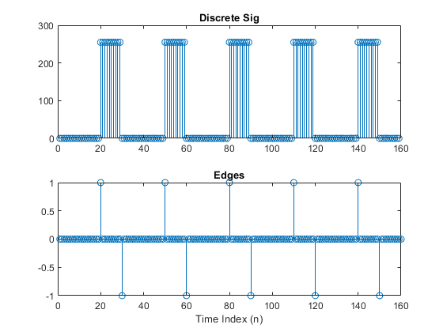

Contents
%%%%%%%%%%%%%%%%%%%%%%%%%%%%%%%%%%%%%%%%%%%%%%%%%%%%%%%%%%%%%%%%%%%%%%% % % Lab10 FIR Filters for Barcode Reading % Group 2: Todd Renner, Tara Zamani, % Luke Hartung, Keaton Davis % %%%%%%%%%%%%%%%%%%%%%%%%%%%%%%%%%%%%%%%%%%%%%%%%%%%%%%%%%%%%%%%%%%%%%%%
3.1 Edge detection and Location via 1-D filters
clear clc xx = 255*(rem(1:159,30)>19); bb = [1/255, -1/255]; yy = firfilt(xx,bb); figure subplot(2,1,1); stem(xx) title('Discrete Sig') subplot(2,1,2); stem(yy) title('Edges') xlabel("Time Index (n)") % 3.1.b We can see that our first difference filter serves as an edge detection % filter with positive values representing a rising edge, and negative % value representing a falling edge. The output can be expressed as: % y[n]= ∂[n-20]-∂[n-30]+∂[n-50]-∂[n-60]+∂[n-80]-∂[n-90]+∂[n-110]-∂[n-120]+∂[n-140]-∂[n-150] % 3.1.1.c: We know that the length of a convolution between two signal xx % and hh will be length(xx) + length(hh) – 1. This case was no exception % our input had a length of 159 and our filter had a length of two, thus % 159+2-1 = 160, which indeed was the length of our output vector yy. % true value setting d = []; for i =1:length(yy) if abs(yy(i))==1 d(i) = true; else d(i) = false; end end edges = find(d) figure stem(edges) title('Edges in Signal') xlabel('nth edge') ylabel('location of edge') % As can be seen in the delta n plot, the values center around four % different widths 8, 16, 24, and 32. This conveys the ideat that there % are 4 different width bars that code a barcode. % Estimated theta by observation theta = 8.
edges =
20 30 50 60 80 90 110 120 140 150
 Bar code
clear, clc HP = imread('HP110v3.png'); %pick a row you want out of the bar code m = 250; xn = HP(m,:); %the edge detector filter bb = [1, -1]; %do the edge detection yn = firfilt(bb, xn); figure subplot(2,1,1); stem(xn) title('Discrete Sig') subplot(2,1,2); stem(yn) title('Edges') xlabel("Time Index (n)") %turn the bar code white to black shade to binary for i =1:length(yn) if abs(yn(i))>=60 d(i) = true; else d(i) = false; end end %this find all the edges L = find(d); figure stem(L) title('Edges in Signal') xlabel('nth edge') ylabel('location of edge') % Delta from L %This finds the width of each strip of color Delta = firfilt(bb,L); Delta(length(Delta)) = []; %plot figure subplot(2,1,1); stem(L) title('Edge Locations') subplot(2,1,2); stem(Delta) title('Deltas') xlabel("nth edge") % e : logic statment %Each bar code consists of 12 numbers %each number is 7 units wide %3 unit buffer on each end %5 unit buffer in the middle %Width = 7units*12 + 2*3units + 5 units %Width = 95units
f/g/h/i for the HP110v3 Bar code
Theta = max(Delta)/4; relativeD = round(Delta/Theta) relativeD = relativeD(7:65); code = decodeUPC(relativeD)
relativeD =
Columns 1 through 13
0 2 2 4 2 2 1 1 1 1 2 1 3
Columns 14 through 26
1 2 1 3 2 1 2 2 1 3 1 2 1
Columns 27 through 39
2 1 3 3 2 1 1 1 1 1 1 1 1
Columns 40 through 52
1 3 2 1 2 3 1 3 2 1 1 2 2
Columns 53 through 65
2 1 1 1 1 4 1 2 3 1 1 1 1
Columns 66 through 70
2 2 4 2 3
ssbeg =
1 1 1
code =
8 8 2 7 8 0 4 5 0 1 6 5
f/g/h/i for the OFFv3 Bar code
Theta = 11/4; relativeD = round(Delta/Theta); relativeD = relativeD(5:63); code = decodeUPC(relativeD)
ssbeg =
5 6 3
Warning: >>decodeUPC: prefix must be three ones
code =
-1 -1 -1 -1 -1 -1 -1 -1 -1 -1 -1 -1